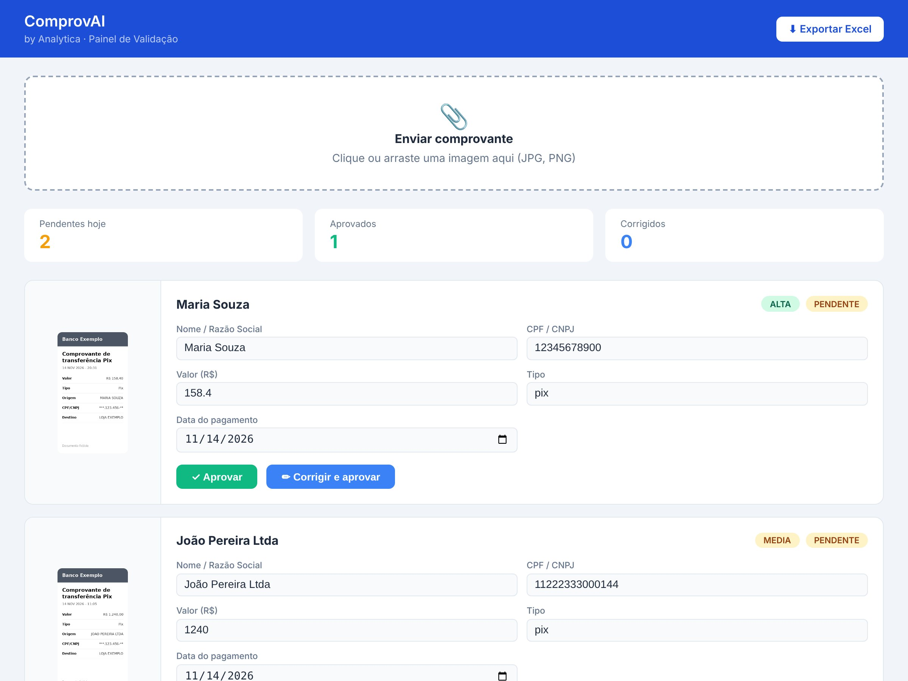

FINANCEIRO · AGENTE DE IA NO WHATSAPP · EM USO
ComprovAI: comprovantes de pagamento conferidos por IA
O cliente manda a foto do comprovante no WhatsApp, a IA lê os dados e o financeiro só confere. No fim do dia, a planilha sai pronta para o sistema.

O DESAFIO
Todo dia chegavam dezenas de comprovantes de Pix pelo WhatsApp. Alguém precisava abrir cada imagem, digitar valor, data e pagador numa planilha e depois lançar no sistema financeiro. Era lento e sujeito a erro de digitação.
A SOLUÇÃO
Um agente de IA recebe a imagem direto do WhatsApp, extrai os dados e entrega para o operador só conferir e aprovar. Cada correção feita pelo operador vira exemplo para a IA errar menos nos próximos comprovantes.
O que o sistema faz
Recebe pelo WhatsApp
O comprovante chega pela conversa normal, sem aplicativo novo para o cliente.
Leitura com IA
Valor, data, pagador e tipo de pagamento extraídos da imagem em segundos.
Conferência rápida
O operador aprova ou corrige; a confiança da leitura indica o que revisar com mais atenção.
Aprende com as correções
As últimas correções entram como exemplo na leitura seguinte.
Planilha pronta
Exportação em Excel no formato de importação do sistema financeiro.
TECNOLOGIA
Python, FastAPI, modelo de visão computacional, Supabase e integração com WhatsApp pela Evolution API.
RESULTADO
Em uso pelo cliente na rotina do financeiro.
Quer algo assim no seu negócio?
Diagnóstico gratuito de 30 minutos, sem compromisso.